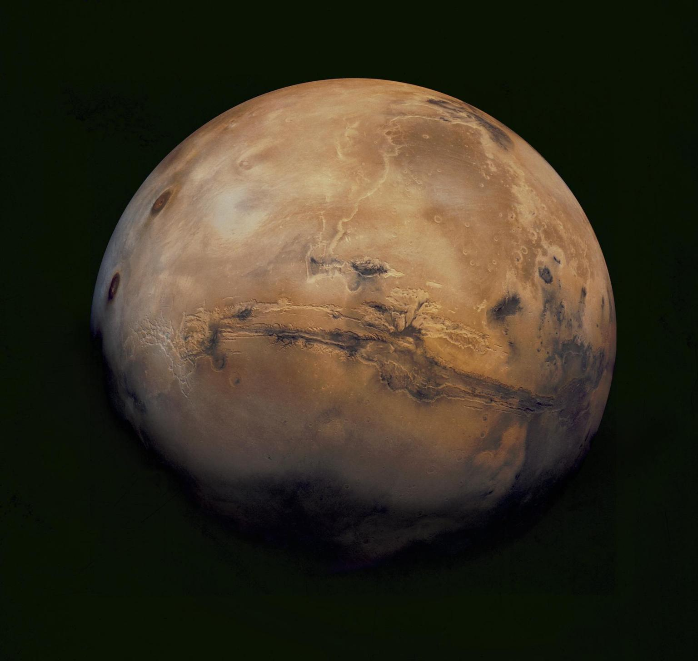
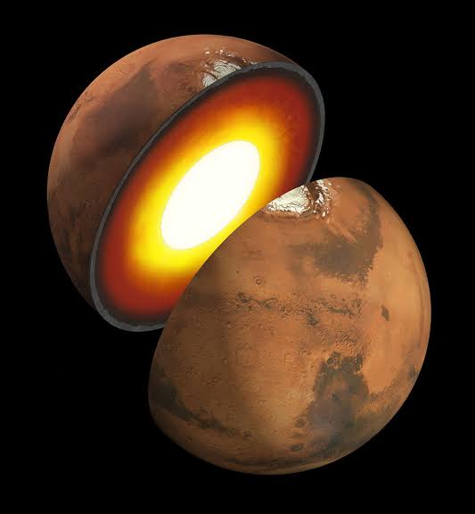
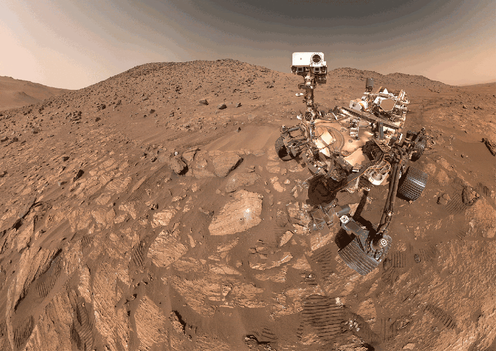
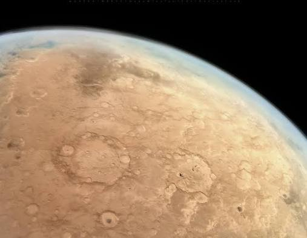
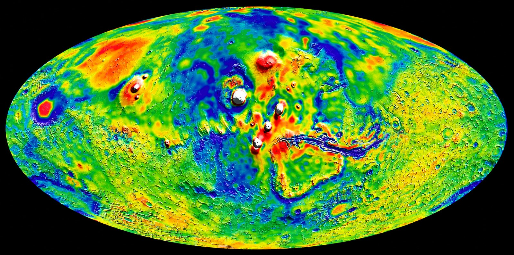
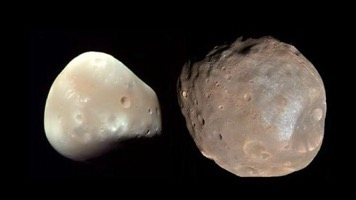

PLANET OVERVIEW
SOL-4 // THE RED PLANET
Mars is the fourth planet from the Sun and the second-smallest planet in the solar system — a cold, desert world known as the "Red Planet" because iron minerals in its soil oxidize (rust), colouring the surface. It is the most habitable planet in our solar system besides Earth, making it the prime target for exploration.
DISTANCE FROM SUN227.9 M km
DIAMETER6,779 km
LENGTH OF DAY24 h 37 m
LENGTH OF YEAR687 d
◉ VISUAL FEED 01 — MARS OVERVIEW IMAGE

INTERNAL STRUCTURE
CRUST / MANTLE / CORE ANALYSIS
Mars has a layered interior similar to Earth's, but on a smaller and cooler scale. Seismic data from NASA's InSight lander has revealed a core, mantle, and crust that tell the story of a planet that lost its heat long ago.
CRUST~50 km thick
MANTLESilicate rock
OUTER CORELiquid iron-sulfur
INNER CORE~1,800 km radius
The core is larger and less dense than expected, and Mars no longer has a global magnetic field — evidence that its interior dynamo shut down billions of years ago.
◉ VISUAL FEED 02 — INTERIOR STRUCTURE IMAGE

SURFACE COMPOSITION
REGOLITH / DUST / ROCK SAMPLE
The Martian surface is a fine, powdery material called regolith, rich in iron oxide dust that gives Mars its red hue. Beneath the dust lies basaltic bedrock, and the soil contains minerals like olivine, pyroxene, and hydrated salts — clear signs that liquid water once flowed across this world.
SURFACE TYPEBasaltic rock
SOIL COLOURRust-red
KEY MINERALSOlivine, sulfates
WATER EVIDENCEHydrated minerals
◉ VISUAL FEED 03 — SURFACE IMAGE

SURFACE FEATURES
LANDMARK CATALOGUE
Mars hosts the most extreme geography in the solar system. Olympus Mons is the tallest volcano known — nearly three times the height of Mount Everest. Valles Marineris is a canyon system that would stretch across the entire United States. The poles hold water and dry-ice ice caps that grow and shrink with the seasons.
OLYMPUS MONS~21.9 km tall
VALLES MARINERIS4,000 km long
HELLAS PLANITIA7.2 km deep
POLAR CAPSH₂O + CO₂ ice
◉ VISUAL FEED 04 — FEATURES IMAGE

ATMOSPHERE
THIN / CO₂ DOMINANT
The Martian atmosphere is incredibly thin — less than 1% of Earth's surface pressure. It is composed mostly of carbon dioxide, with traces of argon and nitrogen. This tenuous blanket can't trap much heat or block radiation, and it fuels the planet's colossal dust storms, which can sometimes engulf the entire planet for weeks.
SURFACE PRESSURE< 1% of Earth
CARBON DIOXIDE95.3%
ARGON1.9%
NITROGEN1.9%
◉ VISUAL FEED 05 — ATMOSPHERE IMAGE

TEMPERATURE
COLD DESERT WORLD
Mars is a frozen desert. With almost no atmosphere to retain heat, temperatures swing wildly between day and night. The average temperature is around −63 °C, and a summer afternoon near the equator may briefly reach a mild 20 °C before plunging to −73 °C at night.
AVERAGE−63 °C
DAYTIME HIGH~+20 °C
NIGHTTIME LOW−110 °C
POLAR WINTER−125 °C
◉ VISUAL FEED 06 — TEMPERATURE IMAGE

GRAVITY
0.38 g FIELD
Mars is smaller and less dense than Earth, so its surface gravity is only 38% of ours. A person weighing 100 kg on Earth would feel like they weigh just 38 kg on Mars. This weaker gravity is one of the biggest unknowns for long-term human missions — it affects bone density, muscle mass, and even whether Mars could ever hold a thicker atmosphere.
SURFACE GRAVITY3.71 m/s²
COMPARED TO EARTH0.38 g
ESCAPE VELOCITY5.03 km/s
100 kg PERSONFeels like 38 kg
◉ VISUAL FEED 07 — GRAVITY IMAGE

MOONS: PHOBOS & DEIMOS
FEAR // PANIC
Mars has two small, potato-shaped moons named after the sons of Ares (the Greek Mars): Phobos ("Fear") and Deimos ("Panic"). They are tiny and cratered, and most scientists believe they are captured asteroids from the nearby asteroid belt. Phobos orbits so close to Mars that it rises in the west and sets in the east — twice per Martian day.
PHOBOS DIAMETER~22 km
PHOBOS ORBIT9,376 km
DEIMOS DIAMETER~12 km
DEIMOS ORBIT23,463 km
◉ VISUAL FEED 08 — MOONS IMAGE
